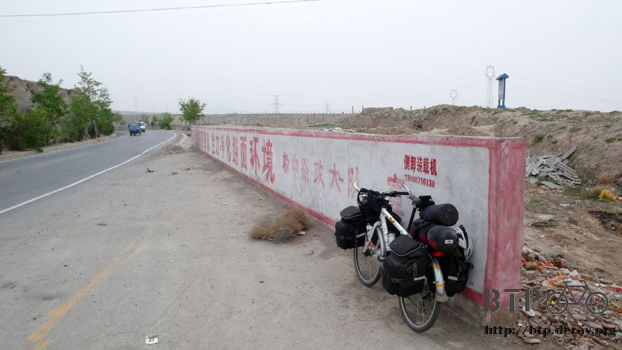
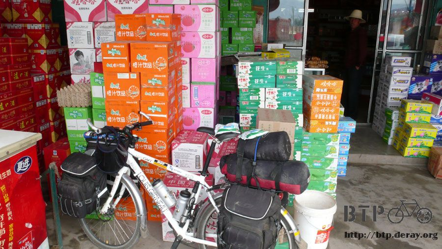
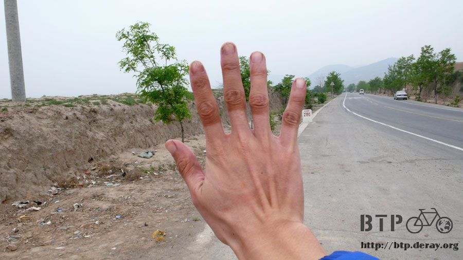
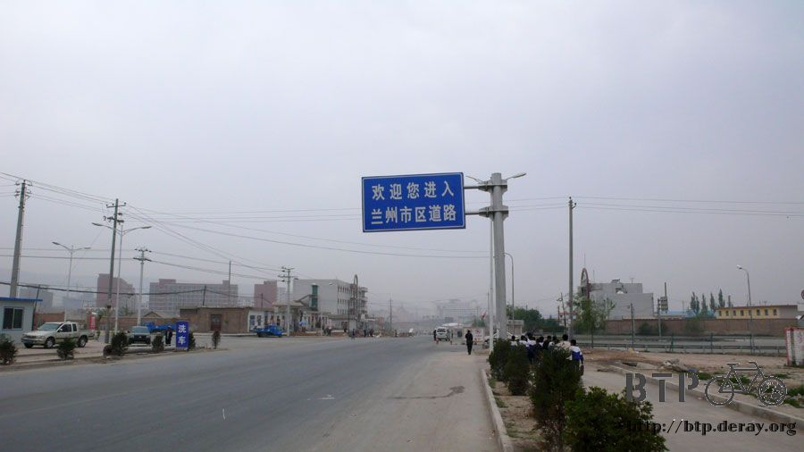
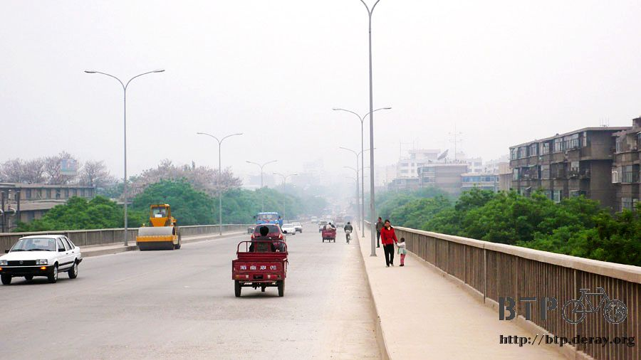
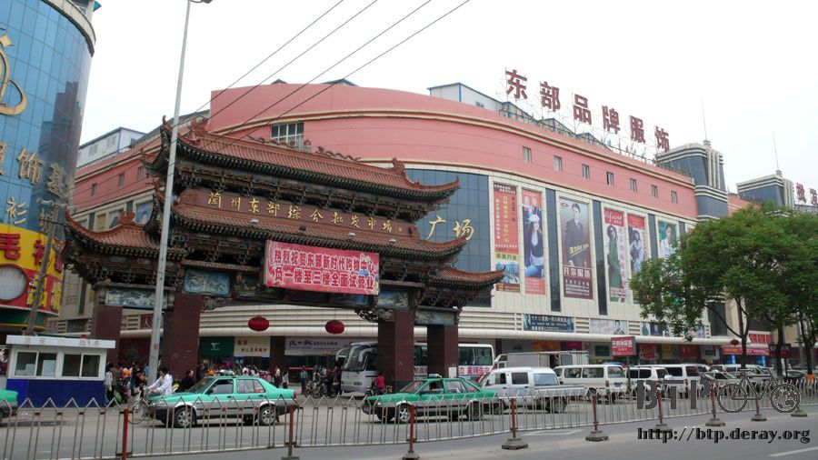
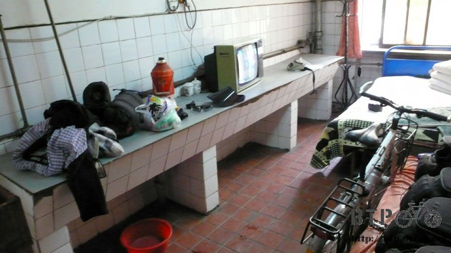
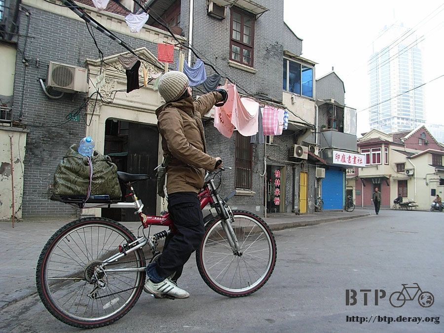

Lanzhou, city of unfamilarity
Before I am took the trip and even now, people who knew about my trip all caringly reminded me to “be careful”, a heart warming gesture.
But I have always felt a sense of freedom, lonely perhaps, but free. After all, I am a “man”,
I am simply enjoying this moment in life, the care freeness it offers and trying not to be a burden for anyone.
The further I traveled toward the North West, the bigger the difference in temperature between night and day.
There’s a saying here, “mesh for day and leather for night”.
My dress code has now changed from a lightweight Anti Perspiration top to a heavier weight Anti Perspiration top.
It keeps me warmer but it isn’t absorbing the sweat as well as the lightweight version.
Before “Taka” the four year old kiddo is about to go to school, his grandmother put some tissues in his backpack.
Not to be out done, I put what left (about half full still) of the sweets I bought yesterday in his backpack too.
Kiddo, take it slow. If you get cavities, don’t blame me, OK? Taka also wanted to go to school with my “Sun Block Cap”,
but his grandmother forced it off his little head and then Taka burst into a loud speaker with tears. XD
The goal today is the city Lanzhou, about 70km’s ride.
Not even a challenge, but for Natu who averages about 50km a day, it may be a bit harsh.
We have only ridden for about 5km and Natu has disappeared again.
Went back to check out on her and I can only laugh, the back tire is flat again.
Although I thought this would happen from our emergency patch work, but only lasted 5km?!!!
Natu wanted me to ride on, she will walk to Lanzhou, but I am a bit concerned.
Natu ‘s visa needs an extension, so she has to get to Lanzhou Public Security Bureau by 2:30pm
By walking she would never make it in time. I have to help her.
Quick brain storm, if we travel back to Gaoyazhen now and replace the tube,
it will only solve the problem temporarily as her problem is the inner tire itself.
If we carry on walking, there are no guarantees there will be a bike repair shop or even a town.
And now Natu is telling me to ride on, she didn’t want to delay my trip.
I AM BETWEEN A ROCK AND A HARD PLACE.
Luckily there are still buses passing by and we waved one to stop.
The bus is full with passengers but the aisle is still empty.
I asked the conductor to see if she will allow Natu to catch a lift to the nearest bike repair shop or straight to Lanzhou,
she was reluctant at first but after I pleaded with her and explained that Natu is a foreigner,
the bike cannot be repaired without tools and we simply cannot leave her wondering on the road,
she caved and agreed. I tried to catch the bus after it has left, what was I thinking?
The bus dropped me after the first climb.
Natu , born in Osaka of a Korean descendant, worked at a Bed & Breakfast Hostel in Okinawa,
other than “How are you?” and “Thank you”, her Mandarin is as good as my Latin.
She has barely any living essentials, are loaded with souvenirs she bought along the trip
and not a single tool to repair the bike.
Her only water supply is the spring water bottle she spent 1 RMB onbut she has a can opener for beers.
But she has no fear traveling along.
I admire her courage, but only after the bus left my sight did I remember I did not remind her to be careful.
It was a coincidence that we met on a remote highway in the middle of China, but I doubt I will see her at Lanzhou.
“Let’s be one day partners!”,
I met Natu with when I got lost yesterday and we thought we could make it to Lanzhou in a day together
since we both are heading there, “Let’s be one day partners!”.
Looked down at my watch, this is about the time yesterday I heard the strange accented “How are you ~”.
Although we did not travel to Lanzhou together, the “let be one day partner!” kinds of ends today. Natu,
all the best to you, may God bless you!
Now then, I can ride on without looking back .
Had a look at Google Earth last night, the road from Gaoyazhen to Lanzhou are all mountain passes,
thought it was going to be a hard ride. Oh well, from 2000m above sea level to 1500m above sea level,
I will just enjoy the “down hill” mountain pass I guess.

Stopped mid way to buy 2 packets of milk for breakfast,
gobbled them down with some biscuits and right back on the bike to Lanzhou.

Took off my gloves during break, after 20 odd days of riding, my fingers now has two tones.
If I get even lazier and don’t even bother with sun screen, I will have bikini lines on my face.

Wow, I arrived at Lanzhou just before 12h00, kind of caught me by surprise,
what am I to do for the rest of the day?

Since I have nothing specific to do, I guess I will follow routine and look for a Hostel.
I just realized I don’t really enjoy the big cities of China, they are literally all the same, all dull and grey and boring.
If Xian doesn’t have the old city wall, if Beijing’s street were narrower,
if Lanzhou is not 1500ft above sea level, I can barely tell the difference.
They are of the same noise, the same commercial influence and I am still uncomfortable in any of these cities.

I like small towns and villages. No tall buildings, old and literally broken, but full of flavour.
Neighbours will sit around street corners and chat, every grocer is a treasure hunt of its own.
I act like a kid who wants everything when I venture into them. The treats are tasty and the price never scares me.
Best of all, the people are people still. A smile is rewarded with a smile, you don’t find this kind of humanity in the big cities.

Gonna ride straight and see what I can find and no surprises,
found a smallish hostel’s sign amongst waves of signs.
The weird thing is this, most of the hostels’ reception are all on the 1st floor, some at the 2nd floor.
Anyway, carried Dido and my bags (close to 50kg) up to the first floor, hardly breathed and the manager is out to greet me.
I think he has seen many bike travelers like me, barely lifted an eyebrow and greeted me with
“you heading to Xingjiang or Tibet”?
How often do you meet someone with this kind of “connection”?
Since I already planned to stay at Lanzhou for two day I am already keen to stay here.
The room is pretty decent too. The only problem would be “price”, RMB 35.00 a night.
Pulled my usual stunt by shaking the head and waved him off (sign of too expensive, I can’t afford it)
and decided that I am going to stroll the street and see if I can find better.
It’s early anyway, I can always come back.
The listed price here is “single room at 35 RMB”, “double sharing at 25 RMB”, “three sharing at 20 RMB” and “four sharing at RMB18”.
Not really keen to worry about my luggage whilst resting or out on the street,
so I refused the manager’s suggestion of take up shared rooms.
But every turn with Dido, every step I took going out, the manager comes up with one more trick.
“I will tell you what, 30 RMB for a single room”, I continue to walk.
“Still not happy? Fine, 25 RMB! 25 RMB has got to be good?”, I put on my sun glasses.
“OK, OK, 20 RMB. Come on, I can’t be cheaper, just stay.”.
Oh my lord! Price cutting in Master’s Degree!
I don’t even need to put up a dialogue! From RMB 35 to 20 I did not even flip my tongue!
I am so pleased with myself! The room offers its own tap and basin,
going to get some washing powder and wash all my clothes (I guess I will hang it out there in my room).

Not bad to have sort out accommodation by lunch.
Talking about lunch I decided to try out the Islamic version of the Beef Noodle Soup.
Probably because the soup looked a bit light in taste, I asked to add in some extra beef.
The Restaurant gave me 7 or 8 slices. I am so touched, this looked like the Beef Noodle Soup I remembered from Taipei.
Got myself a Beef Baomo for dessert and started my strolls on the street (strange, Baomos should be eaten at Xian, I am eating it at Lanzhou,
what am I doing?). Got myself some toilet papers, washing powder (this is damn important!),
some dried fruits and ice cream popsicle and wondered in the street, hey, University of Lanzhou was next door to where I stay.
This is China, usually the University with the name of the city is close to the best ones.
It looked pretty ordinary though. Maybe I will have time to check it out tomorrow.
Actually, I just don’t know what is there is Lanzhou for me to see.

Damn, almost forgot about Natu, wonder where the bus took her?
Did she manage to repair her bike? Did she find Home Affairs to extend her Visa? man, I hope things worked out fine for her.

Photo: 19th of March, Natu’s first day of the trip leaving from Shanghai.